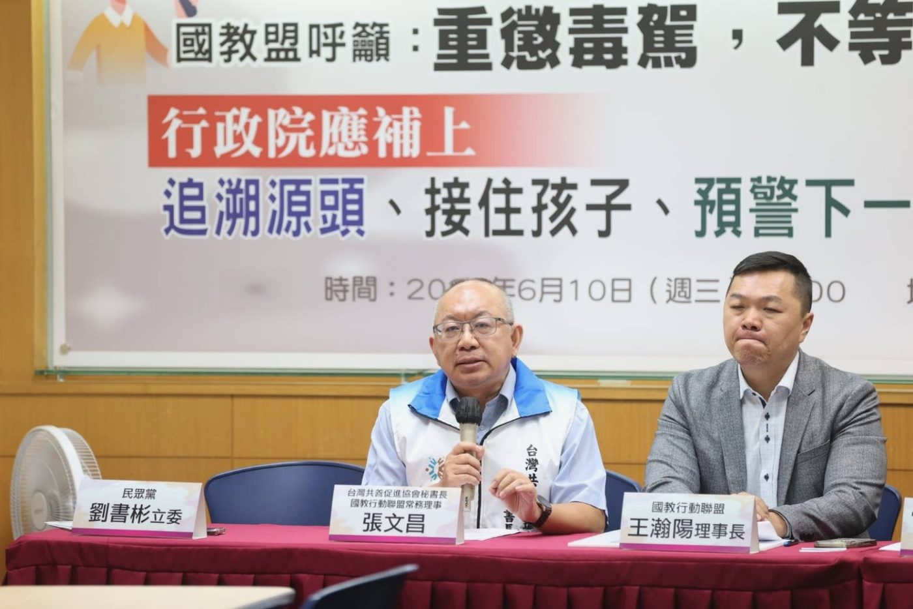

修正公布不等於施行——這一頁追蹤「孩子身邊的輔導人力」何時真正到位
《學生輔導法》2024 年 12 月 18 日修正公布，其中第 11 條（提高專業輔導人力配置）與第 11-1 條（建立督導制度）是三級輔導體系的人力骨幹；但依同法第 24 條，這兩條的施行日期由行政院定之——修正公布至今，尚未生效。2026 年 8 月 11 日，教育部預告修正專業輔導人員設置辦法草案，調高專輔人員敘薪上限；而草案第 36 條明定，新辦法自第 11 條施行之日施行。換句話說：調薪方案與人力配置標準都已經寫好——草案仍須完成預告、法制作業並正式發布；正式發布後，其施行仍繫於行政院所定第 11 條施行日期。本頁持續追蹤三個進度，直到人力真正到位。
這是整個人力落地鏈的第一張骨牌：施行日期未核定，新版人力配置標準不生效，專輔辦法（含調薪）也不生效。國教盟 6 月 10 日陳情、8 月 13 日新聞稿均要求行政院同步核定。
教育部 2026 年 8 月 11 日預告修正草案（預告期 30 日，約 9 月 10 日期滿），調高敘薪上限並增設「資深優良專業輔導人員」職級；期滿後須完成法制作業並正式發布。國教盟同時要求：明定資深優良專輔的全國共同核心標準、審查組成、評選程序與申復機制。
教育部 2026 年 3 月向立法院書面報告：配合學生輔導法修正，專任專業輔導人員預計再增加 213 人。社會需要知道的不只是少數人最高能領多少，而是這 213 人如何分配、何時完成甄聘、各縣市還有多少缺額、高風險學生要等多久才能獲得服務。
| 條文 | 內容 | 狀態 |
|---|---|---|
| 學生輔導法第 11 條 | 提高高級中等以下學校主管機關及專科以上學校之專業輔導人員配置基準。 | 已修正公布，施行日期待行政院核定 |
| 學生輔導法第 11-1 條 | 建立專業輔導人員督導制度。 | 已修正公布，施行日期待行政院核定 |
| 學生輔導法第 24 條 | 明定第 1～3 條、第 11 條及第 11-1 條之施行日期「由行政院定之」。 | 生效中——這一條就是卡點所在 |
法律小知識：立法院三讀、總統公布的修正條文，若該法的施行條款另定「施行日期由行政院定之」，則相關條文在行政院訂定並發布施行日期之前尚未施行。這通常是為了讓預算與人力先到位——但也可能成為無限期的等待。
| 項目 | 現行 | 預告草案 | 正確解讀 |
|---|---|---|---|
| 一般專輔上限 | 七等七階，約 61,225 元 | 八等六階，約 65,846 元 | 提高的是「上限」，不是所有人立即加 4,621 元 |
| 督導人員上限 | 八等七階，約 68,156 元 | 九等六階，約 72,777 元 | 實際待遇仍依資格、年資、職務及契約敘定 |
| 資深優良專輔 | 無獨立職級 | 新設；任職 4 年以上＋近 3 年連續 2 年考核甲等＋工作表現優良；人數以轄內總員額 20% 為限 | 明定處理校園危機事件與高風險個案處遇；符合門檻不等於當然取得 |
| 115 年差額 | — | 草案第 32 條：修正生效前已聘用者，於生效後按 115 年契約存續期間補發新舊報酬差額 | 生效後補發，不代表草案已溯及 1 月 1 日生效 |
| 生效條件 | — | 草案第 36 條：自學生輔導法第 11 條施行之日施行 | 正式發布後，仍繫於追蹤點 1 的行政院核定 |
金額為教育部依現行報酬標準表換算之約數。完整對照與「約 7 萬元」的多重條件，見 8 月 13 日新聞稿附件資訊表。

修正公布不等於施行。學生輔導法 2024 年 12 月 18 日修正公布，其中第 11 條（提高輔導人力配置）與第 11-1 條（建立督導制度）依同法第 24 條規定「施行日期由行政院定之」——截至 2026 年 8 月 13 日，行政院尚未核定施行日期，這兩條關鍵人力條文因此尚未生效。
還不確定。預告草案第 36 條規定，新辦法自學生輔導法第 11 條施行之日施行。也就是說：預告期滿（30 日）、完成法制作業並正式發布之後，仍要等行政院核定第 11 條施行日期，調薪與新版人力配置標準才會真正生效。
不一樣，是兩種不同職類。「專業輔導人員」指具臨床心理師、諮商心理師或社會工作師證書、依法進用從事學生輔導工作者，多配置於各縣市學生輔導諮商中心；「專任輔導教師」屬學校編制內教師職系。本次敘薪調整的對象是前者。
教育部 2026 年 3 月向立法院提出的書面報告表示，配合學生輔導法修正，專任專業輔導人員預計再增加 213 人。截至 2026 年 8 月 13 日，各縣市如何分配、何時完成甄聘、缺額多少，教育部尚未公布全國進度表——這是國教盟持續追蹤的第三個進度點。
一、核定施行日期：行政院應同步核定學生輔導法第 11 條、第 11-1 條施行日期。二、公開人力、經費與晉升規則：公布 213 名新增專輔的配置與到位期程、常態經費與足額率，明定資深優良專輔的全國共同標準。三、公布服務品質與責任機制：每年公布離職率、平均案量、等待服務時間等指標，落實專業督導與退場機制。
會。本頁是追蹤頁：預告期滿、行政院核定施行日期、教育部公布 213 人配置等任一事件發生時，本頁的追蹤儀表與更新紀錄會同步更新，直到人力真正到位為止。